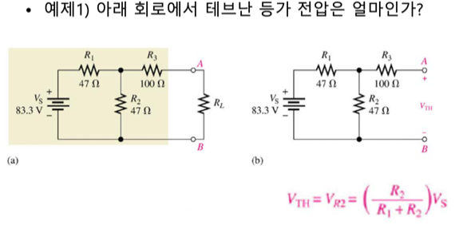

충남대학교 컴퓨터공학과 남병규 교수님의 "전자회로" 강의를 필기한 내용입니다.
이 문서는 보관이 목적이고, 관리되지 않습니다. 따라서 잘못된 정보가 포함되어 있거나 순서가 뒤죽박죽일 수 있습니다.
전압원, 전류원
- 전압원 전류원 둘다 전력을 공급한다 - 전압원이라고 전압만 공급하는건 아니다 이말이다
- 전압원은 전압을 일정하게 공급하는 장치이고
- 전류원은 전류를 일정하게 공급하는 장치다
이상적인 전압원
- 부하에 걸리는 전류가 변화해도 일정한 전압을 걸어줌
- 즉, 전류를 많이 잡아먹는놈이 들어와도 전압이 일정하게 유지됨
- 그리고 내부저항도 없음
- 물탱크 생각하면 이해하기 쉬움
실제 전압원
- 실제 전압원은 이상적인 전압원보다 적은 전압을 제공한다 - 전압원의 내부 물리적, 화학적 구성에 의해 저항(내부저항)이 생기기 때문
- 그리고 이상적인 전압원과는 다르게 전류를 갑자기 많이먹으면 전압이 변한다
- 전압이 떨어지는것을 표현하기 위해 작은 저항이 직렬 로 연결되어 있는것으로 회로도를 그린다
이상적인 전류원
- 마찬가지로 부하에 걸리는 전압이 달라져도 항상 일정한 전류를 공급한다
- 내부저항도 없다
- 트랜지스터가 전류원의 역할을 해준다
실제 전류원
- 실제 전류원도 마찬가지로 내부저항이 존재해서 전류가 좀 떨어짐
- 전류가 떨어지는 것을 표현하기 위해 큰 저항이 병렬 로 연결되어 있는것으로 표현한다
- 저항값이 커야되는 이유는 이 저항값이 커야 나머지 하나의 병렬 가지에 걸리는 전류의 값이 적게 강하되기 때문
Thevnin Theorem
- 테브난 등가회로
- 전압원을 단순화하는 회로이다 - 같은 역할을 하지만 더 단순하게 표현할 수 있게 해준다
- Vth(테브난 등가 전압원) : 전압을 제공하는 복잡한 회로를 그냥 하나의 전압원으로 하나로 퉁친 것
- Rth(테브난 등가 저항) : 전압원에 존재하는 여러개의 저항을 하나의 저항으로 퉁치는 것
- 마치 추상화마냥 복잡한거는 다 빼고 그래서 총 전압은 얼마고 저항을 얼마인지 결과만 보는 것이다
- 얘는 전압원 하나와 직렬연결된 저항 하나로 단순화된다
Thevnin 등가 전압 구하기
- 외부회로를 떼어낸다
- 떼어냄으로써 전류가 흐르지 않는 부분의 저항도 다 없다고 생각하고 쇼트시킨다
- 외부로 출력되는 지점이랑 연결된 저항의 양단의 전압을 구하면 그게 Thevnin 등가 전압이다
Thevnin 등가 저항 구하기
- 마찬가지로 외부회로를 떼어낸다
- 이번에는 전류가 흐르지 않는 부분의 저항을 쇼트시키는게 아니고 전압원을 쇼트시킨다
- 외부로 출력되는 양단을 임의의 전압원의 양단이라고 생각하고 저항을 구하면 그게 Thevnin 등가 저항이다
예제



Norton Theorem
- 마찬가지로 전류원과 내부저항을 Norton 전류원과 Norton 저항으로 퉁치는 것
- In : 노턴 등가 전류
- Rn : 노턴 등가 저항
- 얘는 전류원 하나와 병렬연결된 저항 하나로 단순화된다
Norton 등가 전류 구하기
- 외부 부하를 쇼트시키고
- 외부부하쪽으로 흐르는 전류 구해주면 된다
Norton 등가 저항 구하기
- 얜 그냥 테브난이랑 똑같던데?
- 걍 전원 쇼트시키고 외부부하기준으로 저항 구해주면 된다
테브난 회로를 이용해 노턴회로구하기
- 보면 결국에는 저항의 위치하고 전원종류만 바뀔 뿐 같은 회로이다
- 따라서 테브난에서 외부 쇼트시키고 전류구하면 그게 노턴전류고 여기서 저항위치만 바꿔주면 노턴이 된다
- 반대로 노턴에서 올때는 저항 양단전압이랑 외부송출전압이랑 같으니까 여기 전압 구해주고 저항위치 바꿔주면 됨
- 테브난/노턴은 전압원, 전류원 구분하지 않는다
- 전압원이라고해서 테브난으로만 바꿀 수 있는게 아니고 전류원이라고 해서 노텉으로만 바꿀 수 있는건 아니다